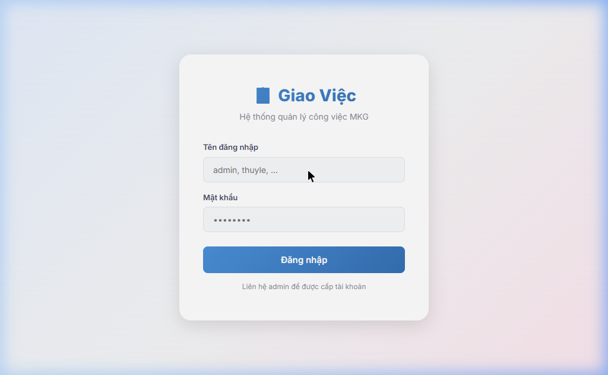
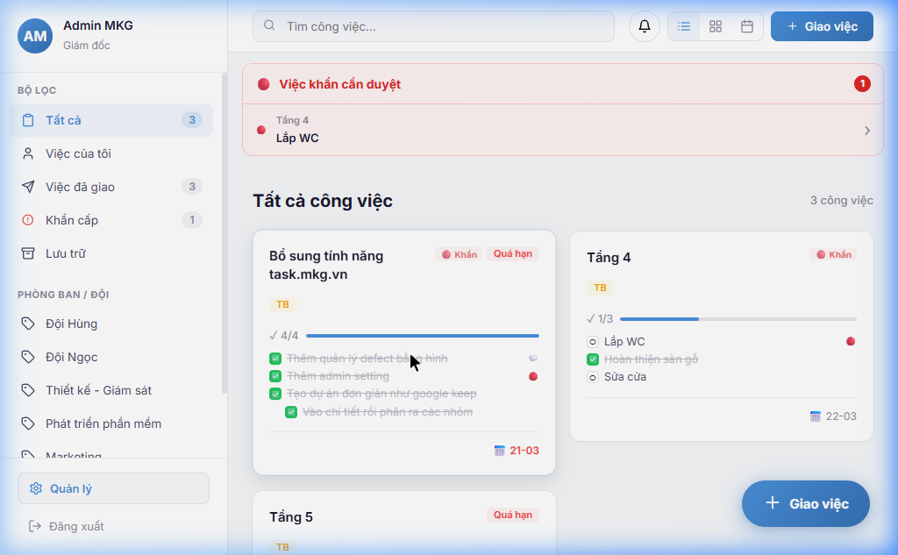
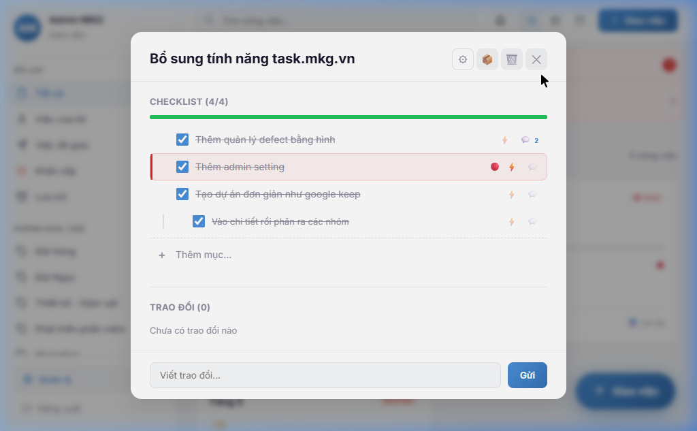
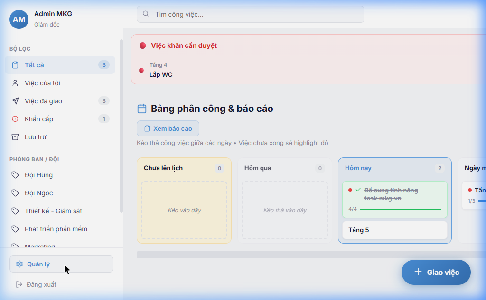

MKG Task Manager — Hệ thống quản lý & giao việc
Phiên bản 3.0 • Cập nhật: 22/03/2026
Truy cập ứng dụng tại m.mkg.vn trên điện thoại hoặc máy tính.

Sau khi đăng nhập, bạn sẽ thấy tất cả công việc được giao dưới dạng các thẻ công việc.

| Vị trí | Chức năng |
|---|---|
| Thanh bên trái | Bộ lọc: Tất cả, Việc của tôi, Việc đã giao, Phòng ban... |
| 🔍 Tìm kiếm | Gõ tên công việc để tìm nhanh |
| 3 nút chế độ xem | ≡ Danh sách ⊞ Nhóm 📅 Bảng phân công |
| 🔔 Chuông | Thông báo mới (việc được giao, cập nhật...) |
| + Giao việc | Tạo công việc mới (chỉ quản lý) |
Bấm vào các mục ở thanh bên trái để lọc công việc:
| Bộ lọc | Hiển thị |
|---|---|
| Tất cả | Toàn bộ công việc đang hoạt động |
| Việc của tôi | Chỉ việc được giao cho bạn |
| Việc đã giao | Việc bạn đã giao cho người khác |
| Khẩn cấp | Các checklist item được đánh dấu khẩn |
| Lưu trữ | Việc đã hoàn thành (archived) |
Phần PHÒNG BAN / ĐỘI ở dưới cho phép lọc nhanh theo nhóm: Đội Hùng, Đội Ngọc, Thiết kế, Marketing...
👉 Bấm 1 lần vào tên phòng ban để lọc ngay.
Bấm vào thẻ công việc để mở chi tiết.

| Nút | Chức năng |
|---|---|
| ⚙️ Cài đặt | Đổi nhóm, người giao, màu sắc |
| 🎨 Màu | Đổi màu thẻ công việc |
| 🗑️ Xóa | Xóa công việc (chỉ quản lý) |
| ✕ Đóng | Đóng chi tiết |
Mỗi công việc có danh sách các mục (checklist). Đây là cách nhân viên báo cáo tiến độ:
| Biểu tượng | Nghĩa |
|---|---|
| ☑️ Xanh | Mục đã hoàn thành |
| ⬜ Trống | Mục chưa làm |
| 🔴 Chấm đỏ | Mục khẩn cấp |
| ⚡ Sét | Đánh dấu khẩn (bấm để bật/tắt) |
| 💬 Bong bóng | Trao đổi trong mục đó |
Đây là màn hình mặc định khi mở app — Bảng phân công theo đội giúp giám đốc và trợ lý phân chia công việc cho từng đội/phòng ban.
| Cột | Ý nghĩa |
|---|---|
| 📝 Nháp của tôi | CV chưa sắp xếp — chỉ bạn thấy (nháp riêng). Kéo vào đội để phân công. |
| 👷 Đội thợ 1, 2... | CV đã phân công cho đội — tất cả mọi người đều thấy |
| 🎨 Phòng thiết kế, 💼 KD... | Các phòng ban khác — mỗi phòng 1 cột |
Trên bảng phân công, bấm nút "Xem báo cáo" để xem tổng hợp từng đội:
| Thông tin | Chi tiết |
|---|---|
| ✅ Đã hoàn thành | Số CV đã xong hết checklist trong đội |
| 🔄 Đang làm | Số CV đang có tiến độ |
| ⬜ Chưa bắt đầu | Số CV chưa có checklist item nào hoàn thành |
Bấm "Quản lý" ở góc dưới thanh bên (chỉ admin/quản lý mới thấy).

| Vai trò | Quyền hạn |
|---|---|
| Giám đốc | Xem tất cả, giao việc, quản lý nhân sự & phòng ban, xem báo cáo |
| Trợ lý giám đốc | Xem tất cả, giao việc, xuất báo cáo ngày, quản lý phòng ban |
| Quản lý | Xem tất cả, giao việc, quản lý phòng ban |
| Nhân viên | Chỉ xem việc được giao, tích checklist, trao đổi |
| Thời điểm | Ai làm | Làm gì |
|---|---|---|
| Sáng | GĐ / Trợ lý | Mở app → Xem cột "Nháp" → Kéo thả CV vào các đội để phân công |
| Sáng | Trợ lý | Bổ sung thêm CV mà GĐ chưa nắm (ấn "+ Giao việc" → CV ở nháp → kéo vào đội) |
| Trong ngày | Nhân viên | Mở app → Vào "Việc của tôi" → Tích ☑️ các mục đã làm xong |
| Cuối ngày | Trợ lý | Bấm "Xem báo cáo" → "📎 Copy báo cáo" → Dán vào Zalo gửi GĐ |
| Cuối ngày | Trợ lý | Bấm ⏭ Hoãn trên CV chưa xong → chuyển sang ngày mai |